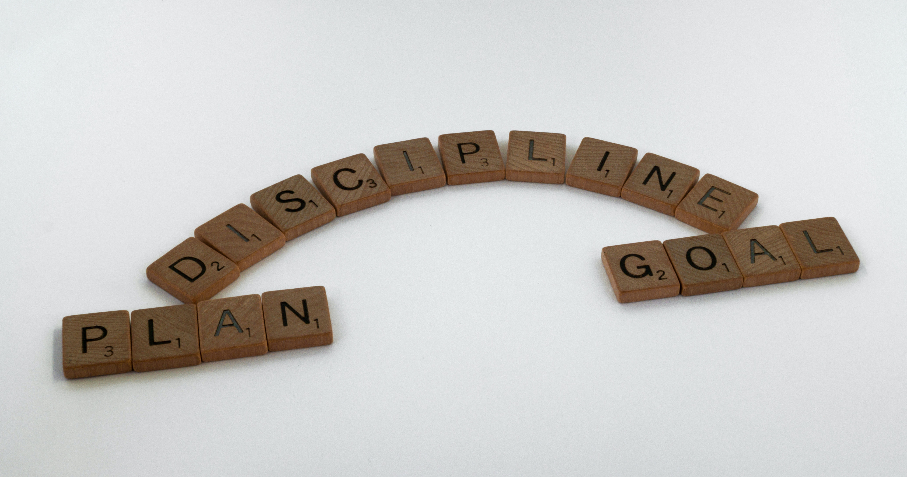

| BSM Name | BSM Description | Behavioral Skill or Mindset? |
|---|---|---|
| Personal Responsability | It is the duty to take charge of the consequences on oneself and/or on others of the actions that one decides to undertake. With it, one responds to the call of the other, or of oneself, to repair the consequences. | Mindset |
| Growth Mindset | describes a way of looking at challenges and setbacks. People with a growth mindset believe that their abilities can be changed, even if they struggle with some skills. They think that with practice their skills can gradually improve. | Mindset |
| Future Orientation | Being future-oriented allows you to plan ahead. Since planning is a crucial part of every project, clearly focusing on the future helps you achieve your goals. You can mentally visualize each step of the process, predict possible obstacles, and visualize your success. | Mindset |
| Persistence | It is the strength and energy that pushes us to strive to achieve our goals, overcoming the obstacles and difficulties that arise along the way, while we learn from the mistakes made. | Mindset |
| Communication | It is one of the most valued skills in the field of work, since it allows workers to understand themselves and others, in order to build positive relationships, streamline task processes and achieve compliance with the previously established goals. | Behavioral Skill |
| Orientation to Details | Ability to notice each part of a whole, how that something can be seen, and also the consequences that these could cause. | Behavioral Skill |
| Team Work | It is the ability to actively participate in the pursuit of a common goal, subordinating personal interests to team objectives. | Behavioral Skill |
| Proactiveness | Act in anticipation of future problems, needs or changes. | Behavioral Skill |
Three Areas of Curriculum Focus

BSM's

Employment Essentials